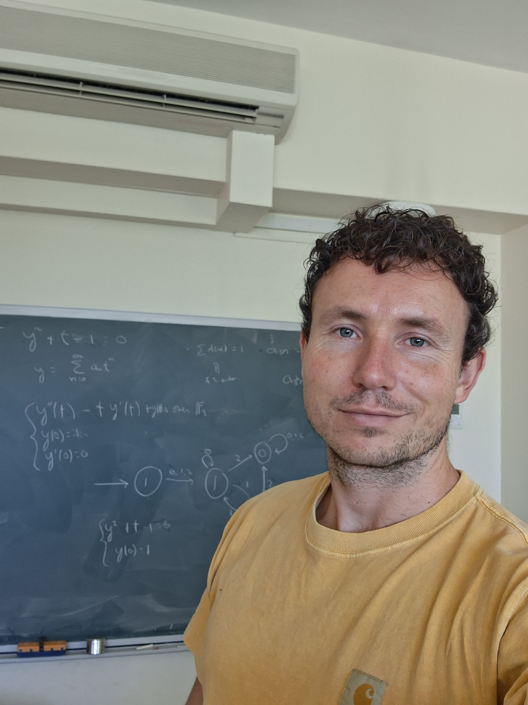

I am a research associate at the university of Sydney, in the Integrable Systems group at the School of Mathematics and Statistics. Before that, I was a postdoc at SISSA, Trieste, in the Geometry and Mathematical Physics group.
I am interested in analytic and algebro-geometric aspects of differential and difference equations, in particular monodromy varieties, arithmetic dynamics, integrable systems, Riemann-Hilbert theory, Painlevé equations and special functions.
At the upcoming meeting of the Australian Mathematical Society in Perth, I am organising a special session on arithmetic dynamics and cryptography together with Miran Kim (HYU), Tom Latimer (USYD), Atsuko Miyaji (OU) and Chuanqi Zhang (Monash). Please reach out if you are interested in participating!